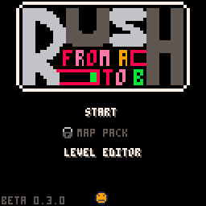

Rush (Changelog)
Page française
Newgrounds 
0.4.0
- Add the level exporter in level editor
- Add the level loader function in level editor
- Add the rubber in level editor
- Change the right click utils, now you can copy the selected tile to use it directly
04/13/2018
0.3.1
- Correct in the level 7
- Correct the timer
Web version
- New button in the main menu to follow me on Twitter
- New button in the final screen to share your time and death on Twitter
04/10/2018
0.3.0
- New level editor
- New organisation of the forum, now you can post you level here

02/20/2018
0.2.1
- 3 Difficulty mode with 8, 4 or 0 checkpoint (change it with the smiley on the floor of the main screen)
- A little modification of the level 26
- A visual information for the checkpoint's levels
02/10/2018
0.2.0
- Add the main menu of the game, with 2 differents variation (for Normal and Deluxe édition).
- Change the death screen
- Add the number of the level you died
- Add the number ot the last checkpoint level
- Change the finish screen
- Add the timer
- Add the number of death
- Change the game screen, with the auto center of the timer
02/07/2018
0.1.0
- 40 Levels
- 4 checkpoints
- Some SFX
- Very nice logo
02/03/2018